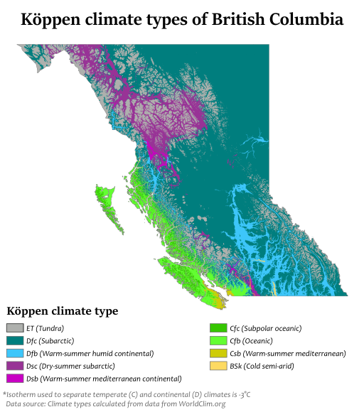

Cool Places
Coastal southern British Columbia has a mild, rainy oceanic climate, some far southern parts of which are warm-summer Mediterranean, influenced by the North Pacific Current, which has its origins in the Kuroshio Current. Due to the blocking presence of successive mountain ranges, the climate of the interior of the province is semi-arid with certain locations receiving less than 250 mm (10") in annual precipitation. The annual mean temperature in the most populated areas of the province is up to 12 °C (54 °F), the mildest anywhere in Canada. The valleys of the Southern Interior have short winters with only brief bouts of cold or infrequent heavy snow, while those in the Cariboo, in the Central Interior, are colder because of increased altitude and latitude, but without the intensity or duration experienced at similar latitudes elsewhere in Canada. For example, the average daily low in Prince George (roughly in the middle of the province) in January is −12 °C (10 °F). Heavy snowfall occurs in all elevated mountainous terrain providing bases for skiers in both south and central British Columbia. Winters are generally severe in the Northern Interior, but even there milder air can penetrate far inland. The coldest temperature in British Columbia was recorded in Smith River, where it dropped to −58.9 °C (−74 °F) on January 31, 1947, one of the coldest readings recorded anywhere in North America. Atlin in the province's far northwest, along with the adjoining Southern Lakes region of Yukon, get midwinter thaws caused by the Chinook effect, which is also common (and much warmer) in more southerly parts of the Interior.